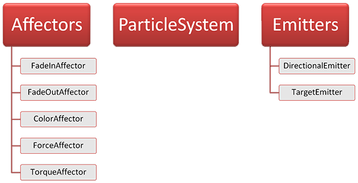

Particles Tutorial
Welcome to the Particles tutorial. It will teach you how to use the particle system in the Thor Library. Fundamentally, there are multiple entities which lead in combination to the rendering of particles on the screen:
- The actual particle system, which stores and renders the particles
- Particle affectors which influence particles during their lifetime
- Particle emitters that create new particles and provide them with initial conditions

The ParticleSystem class
This class is the core of Thor’s Particles module. It holds containers of particles and provides an interface to update and draw them. Every ParticleSystem instance is initialized with a sf::Image representing the particle’s texture. Inside the same system, all particles use the same texture. Let’s define a particle system that uses a given image for the particles:
sf::Image image;
… // Load image
thor::ParticleSystem system(image);
Important are two member functions. First, a method called Update() applies translation, rotation and scale to each particle. It emits new particles and affects existing ones, according to the time that has passed. A parameter stands for the frame time, which can be extracted from a sf::RenderWindow via GetFrameTime(). The other important method is Draw() which renders the particles on your screen, using the current sf::View.
Given you declared a sf::RenderWindow named window, insert the following lines into your main loop:
// Update particle system system.Update(window.GetFrameTime()); // Draw particle system window.Clear(); system.Draw(window); window.Display();
The Emitter class
Before a particle system is able to manipulate and draw any particles, the latter must be created somehow. This is the task of the particle emitters. Emitters are positioned inside the world and emit particles into the near area, also called the emission zone. There are several parameters to set, for example emission rate or lifetime of the emitted particles.
The class thor::Emitter is the abstract base of concrete emitter types, such as DirectionalEmitter or TargetEmitter. You mostly deal with shared pointers to those types; therefore you will find a typedef Ptr in each emitter class. An emitter shared_ptr can be attached to a particle system using thor::ParticleSystem::AddEmitter(). By doing so, you tell the ParticleSystem that it may use your emitter as a source of particles for the system. As soon as the particles are emitted, the ParticleSystem object takes control of them and manages them.
For example, we define an emitter that creates particles inside a circular area, and attach it to the particle system:
// Create emitter that emits 30 particles per second, of which each lives for 5 seconds
thor::Emitter::Ptr emitter = thor::DirectionalEmitter::Create(30.f, 5.f);
system.AddEmitter(emitter);
That’s it! Now the particles are automatically emitted. You can also use CreateCircleEmitter() as a temporary expression, if you don’t need access to the emitter afterwards (for example to move it).
The Affector class
Things get interesting when you want to influence particles after their emission. For this purpose, the Thor library supplies you with particle affectors. There is an abstract base class thor::Affector, as well as concrete derived classes specifying different affector mechanisms. An example is the force affector, which accelerates particles during their lifetime.
Like emitters, affectors are stored inside shared_ptr objects and are attached to a ParticleSystem. Every frame, the particle system invokes each of the attached affectors and lets them modify the particles. A simple example of an affector that introduces a fade-out effect during the last quarter looks like this:
thor::Affector::Ptr affector = thor::FadeOutAffector::Create(0.1f); system.AddAffector(affector);
Customization [advanced]
There is not much to say here: You can easily provide your own emitter or affector class by deriving from thor::Emitter or thor::Affector and overriding the pure virtual functions. Take a look at the documentation for further information.